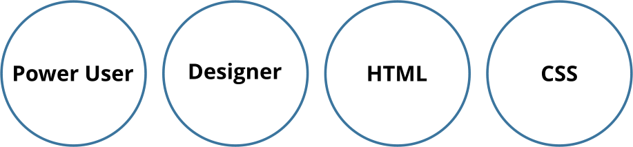
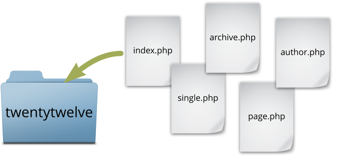
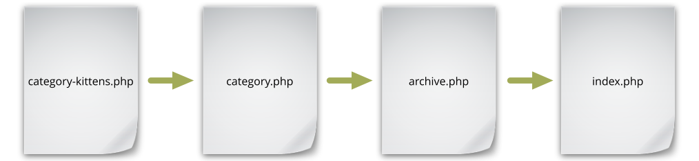
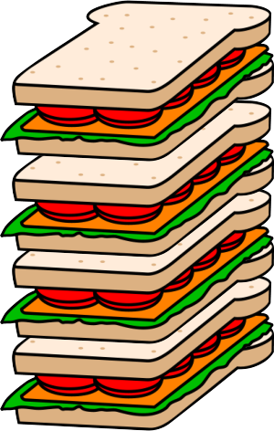

What You Don't Know You Can Do
WordPress Development for Absolutely Everyone
With Tracy Levesque / @liljimmi
Hi, I'm Tracy.
Power User
HTML
CSS
PHP

We can develop for WordPress, too!
WordPress Development
Demystified!
The WordPress Template Hierarchy
The WordPress Template Hierarchy
codex.wordpress.org says:
WordPress uses the Query String — information contained within each link on your web site — to decide which template or set of templates will be used to display the page.
The WordPress Template Hierarchy
Translation
Name a template file a certain way and it will automatically apply to a certain page.
OMG
The WordPress Template Hierarchy
What it is

The WordPress Template Hierarchy
What it is

The WordPress Template Hierarchy
What it is

The WordPress Template Hierarchy
What it is
- "Blog" page
- Regular page
- Archive pages
- Single post
- Search result
- Etc...
The WordPress Template Hierarchy
What it can do

The WordPress Template Hierarchy
Twentytwelve example
The WordPress Template Hierarchy
How you can use it
Power users - Look for themes or theme frameworks.
Designers - Make them yourself!
The Loop
The Loop
codex.wordpress.org says:
The Loop is PHP code used by WordPress to display posts.
The Loop
Translation
The Loop is a set of instructions in a template that grabs content and displays it on a page.
The Loop
What it is

The Loop
What it is
The Loop
What it is
The Loop
What it is
Main components
- Title
- Content
The Loop
What it is
Additional content, aka Metadata.
- Author
- Date
- Featured Image
- Categories (posts only)
- Tags (posts only)
- Etc.
The Loop
What it is
Instructions
- Only show posts from the "Pets" category
- If a post is tagged "kittens" add a special style to it
- If a post is tagged "dogs" don't show it
The Loop
What it can do
moviefanfare.com example.
The Loop
How you can use it
Power users - Look for themes or theme frameworks.
Designers - Do it yourself! Check out The Loop in Action.
Custom Post Types
Custom Post Types
codex.wordpress.org says:
A Custom Type is a Post Type you define.
Custom Post Types
Translation
More than the usual Pages and Posts.
Custom Post Types
What they are
Pages and Posts are both Post Types
- Content with sets of fields
- Own admin area
- Consistent input
- Consistent output
Custom Post Types
What they are


Custom Post Types
What they can do
Custom Taxonomies

Custom Post Types
What they can do
Custom Post Type:
Custom Taxonomies: Genre, Year, Director and Rating
Custom Post Types
Static Guard example
3 custom post types: Products, Stylists and Tips
Custom Post Types
How you can use them
Power users - Use a plugin.
Designers - Code your own. Custom Post Types for Designers
Hooks, Actions and Filters
Hooks, Actions and Filters
codex.wordpress.org says:
Hooks are provided by WordPress to allow your plugin to 'hook into' the rest of WordPress...There are two kinds of hooks:
- Actions: A custom PHP function defined in your plugin (or theme) and hooked, i.e. set to respond, to specific events that take place in WordPress.
- Filters: Functions that WordPress passes data through, at certain points in execution, just before taking some action with the data
Hooks, Actions and Filters
Translation
Hooks, Actions and Filters allow you to change WordPress functionality without breaking it.
Custom Post Types
What they are
Hooks - Points at which WordPress allows you to tap into a function and safely modify it.
- Excerpts
- Admin menus
- Post content
- Custom Post Types
- Sidebars
Hooks, Actions and Filters
What they are
Actions - A hook that makes something new happen when a WordPress function is triggered.
Hooks, Actions and Filters
What they are
Filters - A hook that modifies a WordPress function when it is triggered.
Hooks, Actions and Filters
What they are
Demo time!
Hooks, Actions and Filters
What they can do
Make WordPress great!
Hooks, Actions and Filters
How you can use them
Power users - Use plugins
Designers - Add functionality! WordPress Codex on Theme Development.
Resources
THE END
Questions?
Slides available on Slideshare: slideshare.net/TheTracyL